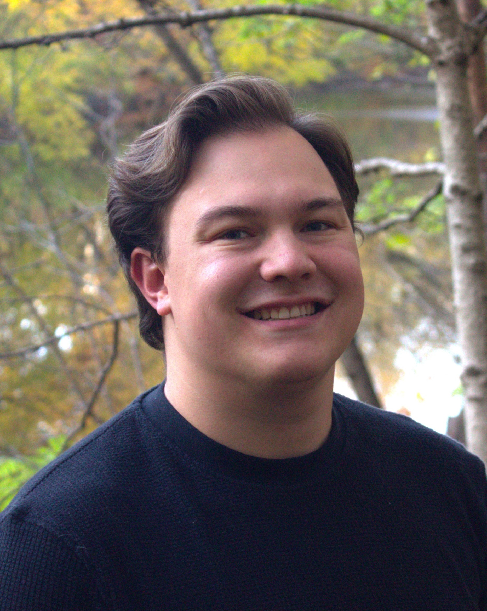

About me:
I am a second-year doctoral student in the Department of Linguistics at the Ohio State University.
As a morphologist, I am mainly interested in examining the structure and complexity of inflectional systems through quantitative and computational methods. To investigate these questions, I tend to work on the morphological systems of Spanish and other Romance varieties. I am currently advised by Dr. Andrea Sims
I have an MA in Linguistics from San Diego State University in 2025; my thesis is titled Dialectal Variation and Morphological Complexity: A Study of Spanish Verbal Systems. I also hold a BA in Linguistics, with a secondary major in Spanish Studies, from Brigham Young University in 2022.

Contact Information
poggemann DOT 1 AT osu DOT edu
Department of Linguistics
Oxley Hall
1712 Neil Ave, Columbus, OH 43210